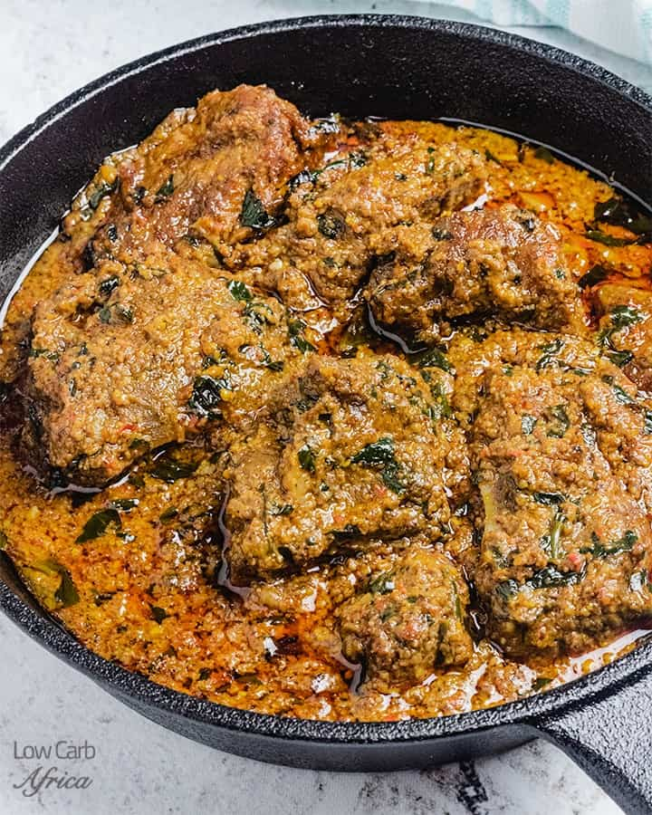

Esisa Soup

How to make Esisa Soup
Ingredients
- 1 cup Beniseed
- 8 pieces beef
- 8 pieces Pomo (cow skin)
- Bitter leaf 4-6 leaves sliced / Scentleaf
- 1 tablespoon ground Crayfish
- 1/4 medium size Onion
- 2 pieces yellow Cameroon Pepper to taste
- 3 pieces red Scotch Bonnet to taste
- 1 cup of palm oil
Steps
- Wash and dry the beniseed. Dry fry for a few minutes until it starts to pop
but not brown. Allow to cool completely. You may want to get this stage of the cooking done
some days ahead of cooking. When the seeds are completely cool, you can blend to a powder.
The blend will not be very smooth particularly if you are using the dry part of the domestic blender.
I added some onion and scotch bonnet pepper to blend my beniseed so as to get a nice flavour.
- Season meat and cow skin with salt, pepper, small quantity of chopped onion and
some seasoning. Cook until soft.
- When beef and cow skin is cooked, add crayfish, palm oil and bring to boil for about 5 minutes.
Taste and correct the seasoning and pepper level.
- Add the ground beniseed and cook for about 3 minutes stirring from time to time.
- Add the Bitterleaf and scentleat and cook for about 2 minutes
- Serve any swallow of choice
Home